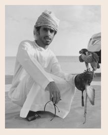
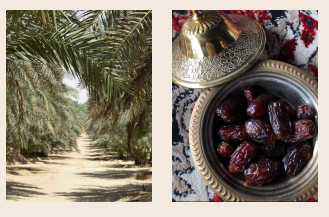
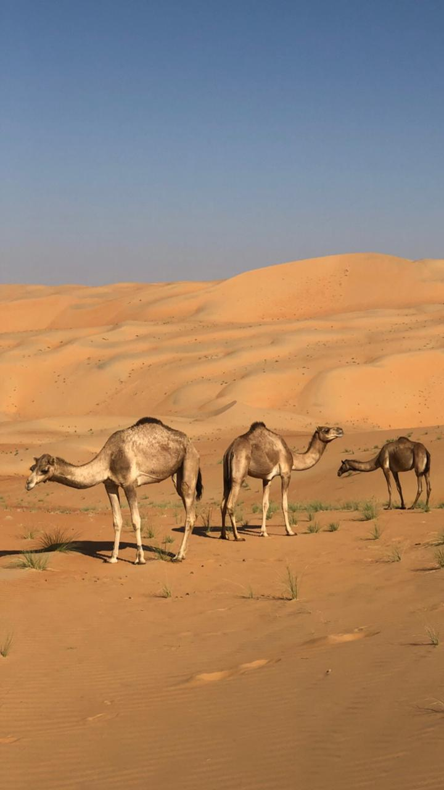
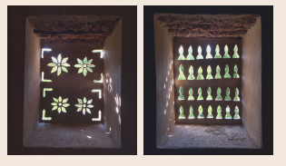

LIWA NIGHTS
TOURS
A local tourism service specializing in authentic Emirati cultural and bedouin experiences
.jpeg)
A B O U T U S
In the midst of the Rub’ al Khali is an oasis called Liwa.
Home to early bedouin tribes flourishing with culture,
nobility, and tradition, this oasis is unsurpassed. For the
first time, we are providing a wondrous experience for
adventurous and curious travelers who want to switch-off
and immerse in the genuine hospitality of local bedouins.
Join us dune-side and create truly unforgettable memories.

C O F F E E & T E A
The ritual of coffee-making for bedouins was more than just a tradition. It was a sign of generosity and hospitality. We teach and guide you through the local coffee and tea making process known and gahwa, chai, and karak
C O N T A C T U S
+971 50 660 7227
@liwanights
facebook.com/liwanights
“Travel far enough, you meet yourself.”
O U R E X P E R I E N C E S
.jpeg)
D U N E B A S H I N G
Some of the best views in all of UAE are right here in Liwa. Mass golden sands with nothing else in sight. A drive that’s sand-packed and full of beauty and adventure.
.jpeg)

F A L C O N R Y
For 4,000 years, hunting with falcons played a vital role in the survival of bedouin tribes. An ancient tradition in Abu Dhabi still honored to this day. Learn the basics in falconry and watch as the world’s fastest bird hunts for its prey.
D A T E F A R M S

D R I V I N G L E S S O N S
Learn to navigate the desert like a local and ride the dunes with ease. *Based on request
.jpeg)
S P E E D B U G G I E S
Get your heart racing and adrenaline soaring with the thrill of off-road speed

C A M E L R I D E S
Camels were such a dependable asset to bedouin tribes.
They provided food, transport, milk, and clothing. Known
as “the ships of the desert”, we offer camel rides through
the wavy dunes as the bedouins would.
*Camel racing experience based on request and
availability

H I S T O R I C A L F O R T S
Liwa is home to more than 10 historical forts that were used for protection of date harvests which were a crucial element in the survival of tribes